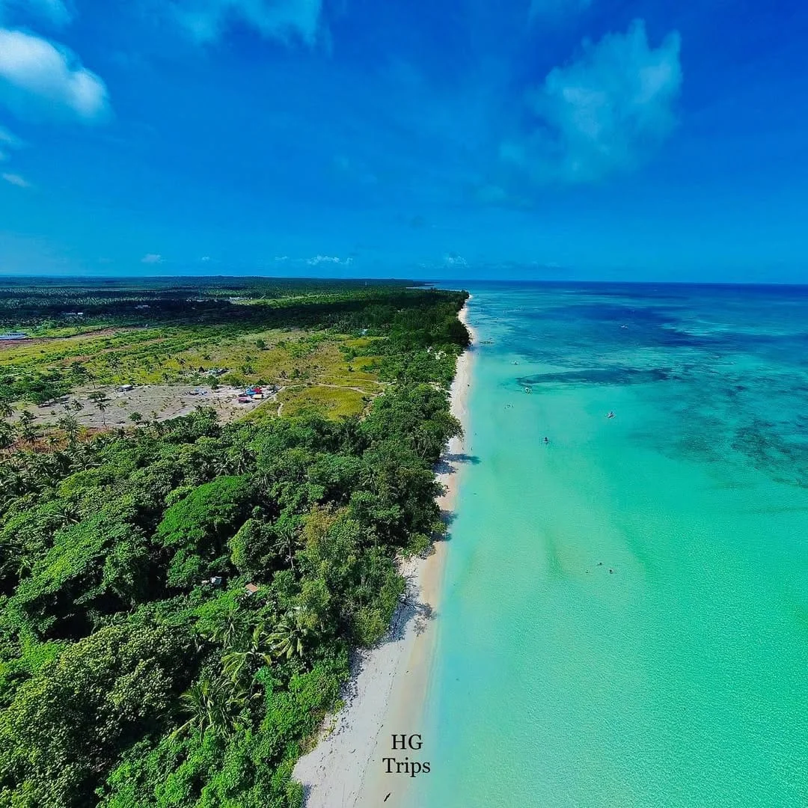
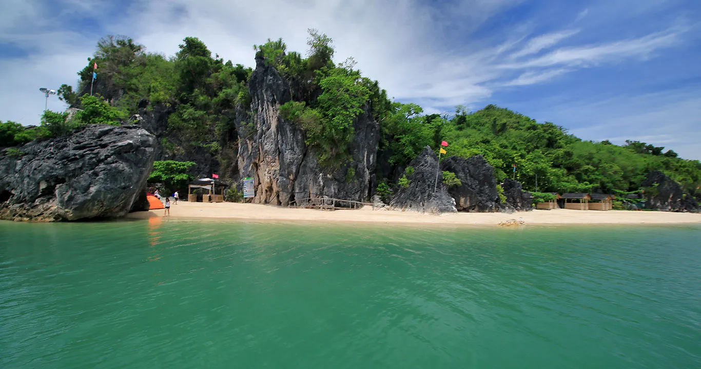
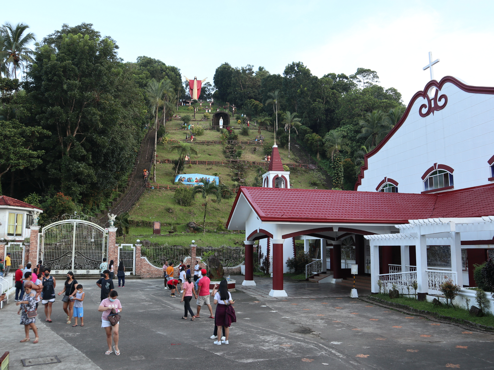

Cagbalete Island
Famous for its expansive white sandbar revealed during low tide and serene waters.
Must-visit places across Quezon Province.

Famous for its expansive white sandbar revealed during low tide and serene waters.

Stunning limestone formations, white sand shores, and perfect beach camping spots.

A sacred pilgrimage site at the foot of Mount Banahaw near historic Spanish-era churches.